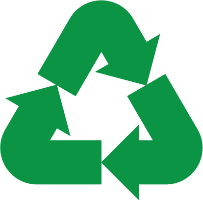
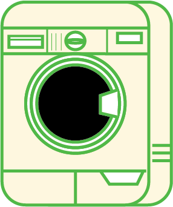
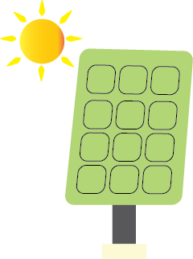

Recycling
Ons recyclingprogramma is ontworpen om gebruikte kleding nieuw leven te geven en afval te verminderen.
Door je oude kleding aan Episode te doneren, help je de mode industrie minder schadelijk te maken voor het milieu.
Hier is een overzicht van hoe het proces ongeveer verloopt:
De eerste stap is het verzamelen van gebruikte kleding uit verschillende bronnen, zoals inzamelbakken, kringloopwinkels en recyclingprogramma’s.
Deze items worden verzameld en naar recyclingfaciliteiten vervoerd.
Hierna wordt gekeken naar uit welk materiaal de kleding is gemaakt, of de kleding nog steeds in goede staat is en of het stuk nog hergebruikt kan worden.
Items die nog in goede staat zijn, kunnen worden gereserveerd voor donatie, terwijl andere worden voorbereid voor recycling.
Hierna wordt er gekenen naar de kwaliteit van de kleding. Items die van betere kwaliteit zijn kunnen als tweedehands kleding worden doorverkocht, terwijl items van lagere kwaliteit naar recyclingprocessen worden gestuurd.
Het recyclingproces kan variëren afhankelijk van het materiaal.
Bijvoorbeeld: natuurlijke vezels zoals katoen en wol maar ook onnatuurlijke zoals polyester worden vaak versnipperd en gespannen tot nieuw draden.
Sommige materialen worden omgezet of hergebruikt in minder waardevolle materialen zoals bijvoorbeeld vulling voor kussens.
Voordat de materialen worden hergebruikt, worden ze gewassen.
De gewassen en verwerkte vezels worden vervolgens gebruikt om nieuwe stoffen en producten te maken.
Ten slotte worden de nieuwe geproduceerde artikelen verstuurd naar winkels en consumenten.
Groene Wasmachine
Door het gebruiken van de wasmachine verminder je gebruik van water en energie. Door gebruik te maken van technologieën zoals waterrecycling en wasprogramma's, zorgen we ervoor dat onze kleding op een milieuvriendelijke manier wordt gereinigd.
Zonnepanelen
Episode gebruikt zonnepanelen om veel van onze energie te krijgen. Door gebruik te maken van zonlicht verminderen we onze afhankelijkheid van fossiele brandstoffen. Dit proces is een milieuvriendelijke en efficiente manier om bij te dragen aan een groenere planeet.